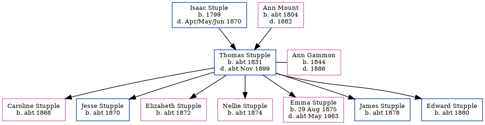

Thomas Stupple c1831 - c1899
[ Home ] | [ Calendar ] | [ Surnames Index ] | [ Errors ] | [ Family History ]A bricklayer's labourer and the child of Isaac Stuple and Ann Mount, Thomas Stupple, the three times great-uncle of Nigel Horne, was born in Herne Bay, Kent, England c. 18311,2,3, was baptised in Herne, Kent, England on 12 Jun 1831 and married Ann Gammon (a charwoman with whom he had 7 children: Caroline, Jesse G, Elizabeth, Nellie, Emma Jane, James S and Edward) at Christ Church in Herne Bay on 5 Jun 18655.
During his life, he was living in Vessels, Royal Navy, England in 18611; and at Nursery Gardens in Herne in 18812 and on 3 Apr 18816.
He died c. Nov 1899 in Blean, Kent, England3,4.
Parents
- Isaac was born in 1799
- Ann was born c. 1804
Children
- Caroline was born c. 1868
- Jesse G was born c. 1870
- Elizabeth was born c. 1872
- Nellie was born c. 1874
- Emma Jane was born on 29 Aug 1875
- James S was born c. 1878
- Edward was born c. 1880
Citations
- 1861 England Census Online publication - Provo, UT, USA: The Generations Network, Inc., 2005.Original data - Census Returns of England and Wales, 1861. Kew, Surrey, England: The National Archives of the UK (TNA): Public Record Office (PRO), 1861. Data imaged from the National
- 1881 England Census Online publication - Provo, UT, USA: The Generations Network, Inc., 2004. 1881 British Isles Census Index provided by The Church of Jesus Christ of Latter-day Saints © Copyright 1999 Intellectual Reserve, Inc. All rights reserved. All use is subject to the
- England & Wales, FreeBMD Death Index: 1837-1915 Online publication - Provo, UT, USA: The Generations Network, Inc., 2006.Original data - General Register Office. England and Wales Civil Registration Indexes. London, England: General Register Office. © Crown copyright. Published by permission of the Cont
- England & Wales deaths 1837-2007 - Findmypast
- England & Wales Marriages 1837-2005 - Findmypast
- 1881 England, Wales & Scotland Census - Findmypast (was age 48 and the head of the household)
Media
England & Wales deaths 1837-2007 - BMD/D/1899/4/AZ/000378/094
England & Wales marriages 1837-2008 - BMD/M/1865/2/SZ/000175/026
Kent, Canterbury Archdeaconry marriages 1538-1928 - GBPRS/CANT/M/97073836/1
1881 England, Wales & Scotland Census - GBC/1881/0004746698
Family Tree
Map
Generated by ged2site. Last updated on Jul 3, 2024
Known Issues
Surname is different from both parents
Census information missing between 1861 England Census and Census UK 1881